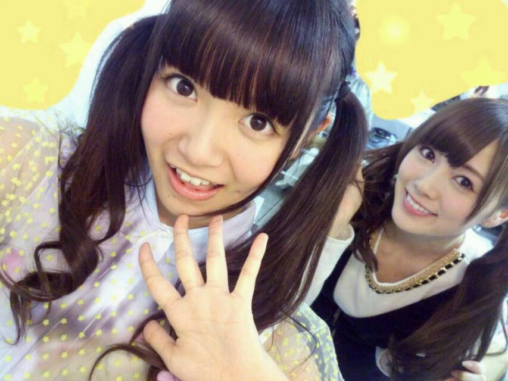

| 2014/03 14 Fri | ひめたん(*>ω<*)そ の419 |
そういえば昨日の夜中に
中四国の方で地震があったと聞きました。
コメントでもたくさんの方に
実家大丈夫？って心配をかけてしまいましたが
中元家はみんな無事です！
でも広島のほうは
普段あまり地震が起こらないから
怖かったみたい(´；；｀)
みなさんは大丈夫ですか？
心配......

まいやんちゃーん！
ところでみーなさーんヽ(´・ω・｀ヽ)
今日はホワイトデーなんだよー
ひめたん待ってるんだからねー？
１日遅れてもひめたん待てるんだからー
公式サイトで
8thシングル初回限定盤特典映像の
詳細が発表されました！
今回のテーマは「Creator's Etude」
みんなでチームに別れて即興劇♪
Type-A、Type-Bに収録されます
ぜひチェックしてみてねー
XXLパーカー着てるので
何者？感でてるけど
ぴんくのやつがひめたんだよー
今夜はNOGIBINGO!2
残り少なくなってしまった(´-ω-`)はやいよー
是非観てくださいませ！
そーいえば
花粉症大丈夫ですかみなさんー？
コメント読んでたら
結構みなさん花粉症つらいーて方が多くて
親近感が沸きすぎてくしゃみが出ました(適当)

 ひめたんはよく何の飲み物飲みますか？
ひめたんはよく何の飲み物飲みますか？
自分はあれを飲んでます
ごめんなさい伝わらないです(笑)
ひめたんは麦茶がすきです(＊^ω^＊)
あとりんごジュースを好んで飲みます
ひめたんはヨーグルトには
蜂蜜とジャムどっちを入れたい人ですか？
どっちも美味しいよねー！
はちみつが多いかな♪
ひめたんは何時間寝られる？
それが寝られないのよ。
ひめたんは夜どんなに遅く寝ても
朝になったら起きちゃう人みたい(´・ω・｀)
起きたら昼過ぎでしたーとか絶対ないんだよね。
時間を忘れて寝たいのに......
ひめか姫、ごきげんうるわしゅうございます。
退屈しのぎにカラスを10羽
お送りさせていただきます。
どうぞ、お納めください。
いじめか(゜ω゜)通報するぞ
ひめたんはちんすこうなら
チョコかふつうのか塩どれが一番好きですか〜？
チョコとかあるのね初耳！
よくあるあの味と塩しか食べたことないの。
チョコ！気になる！誰か沖縄行ってきて！
地球最後の日だったら何したい？
私はお母さんのご飯食べたいな。
あーもうステキな答えありがとう(；；)
ほっこりしたー＊＊
そうだねーなんだろうね
時間が許すなら広島に帰りたいかなー
 私はツインテールひめたん食べたいんですけど
私はツインテールひめたん食べたいんですけど
どうしたらいいですか？
やだーいたいー( >_< )
でもね、ひめたん美味しいと思うよー♪
でもだめー♪♪
写真集のタイトルの季刊ってなんて読むの？？
「きかん」かな◎
シュークリームとチーズケーキ、
どっちが好き？？？
わたしは ひめた...と見せかけて、
フルーツタルトが好き(っ´ω`c)うふふ
あーもーかわいいなんてかわいいの。
もうかわいいからフェイントも許すし
おねーちゃんフルーツタルトも
買ってきてあげるよおー
聞いてないと思うけど、そのみっつの中なら
チーズケーキがすきです。
ひめたんのブログの
コメント欄下２ケタに46を踏んだ方へ
手書きでコメ返するコーナー
＼ ひめたん46 ／

いつもたくさん楽しいコメント
ありがとうございますっ
足腰ねー
たくさんの方が心配してくださって
ありがとうね(´nωn`)
ひめたんはかまちょーな人なので
ひとに心配されると
嬉しくってにやにやするの♪ひめたんってば最低♪
どーやったら治るんかしらんけど
とりあえず気はしっかり持とうかなと思います
あとみなさんが教えてくれた治療法やってみる！
同じく腰痛いよーっていうみなさん
一緒にがんばりましょうー
そーいえば
コーヒー飲めなくて幼いねーと言われたり
足腰痛くておばあちゃんねーと言われたり
うーん実に複雑。
(＊´・ω・＊)
コメント(610)
2014/03/14 23:48